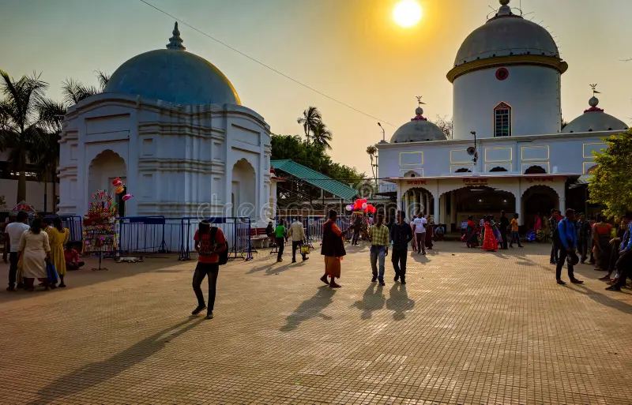
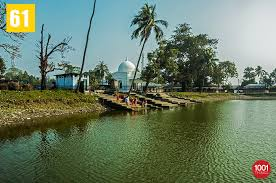

Jalpesh Temple


Jalpesh Temple
Jalpesh Temple[1] (Bengali: জল্পেশ মন্দির) is an important Hindu temple dedicated to the Bhramari Saktipitha's Bhairava as Jalpesh. The worshiped in this temple is Bhairava as Jalpesh, a form of Shiva – one of Hinduism's trinity of supreme divinity. The temple is located on the banks of the Jarda river, 7–8 km from Mainaguri town in the Indian state of West Bengal.
History
Bishwa Singha, father of Maharaja Nara Narayan of Cooch Behar, founded the Jalpesh temple in 1524. Later he rebuilt the temple in 1563. Again after 100 years, King Pran Narayan rebuilt this temple in 1663
During the reign of King Lakshmi Narayan of Cooch Behar, Mahidev Raikut declared his independence in 1621 AD, refusing to obedience to the Koch dynasty. Since then the temple was under the supervision of Raikats of Baikunthapur. It was restored on 30 January 1899 by Rani Jagadeswari Devi, wife of King Jagendra Deva Raikut.
An earthquake occurred in Jalpaiguri district on 26 April 2015 at 11:41 AM (IST). The duration of the earthquake was 58 seconds. Initially, the magnitude of the tremor was 7.5 on the Richter scale, but it was finally 7.8. University of North Bengal's meteorologist Subir Sarkar said that the magnitude of the earthquake in Jalpaiguri was 6.9 on the Richter scale. The earthquake caused numerous cracks in the walls and spire of the ancient Jalpesh temple.
Deity
The worshipped deity in the temple is Bhairava as Jalpesh. Inside the temple there is a Shivalinga called 'Anadi'.
Festivals and fairs
The main festival celebrated in this temple is Mahashivratri. Pilgrims come in July–August and February–March to worship Lord Shiva. Shravani Mela is held in the temple during the month of Shravan. Ever since the construction of the temple in the 17th century, a famous fair started here on the occasion of Shiva Ratri. The fair is one of the oldest fairs in West Bengal. Hundreds of thousands of people gather for the fair. Before India's independence, elephants were sold at these fairs. People from Nepal, Bhutan, Bangladesh and other nearby states come here for the fair.
Located in Maynaguri Town and in the Jalpaiguri District of West Bengal, Jalpesh Mandir is one of the sacred religious Temple dedicated to Lord Shiva. This ancient Hindu temple has a unique history and was first built by Sri Bisu Singh, the father of Coochbehar's king Maharaja Narayan in the year 1524.
Thousands of pilgrims visit this sacred pilgrimage site from North Bengal and from the entire state of West Bengal in the months of July-August and then again Feb- March to worship Lord Shiva. Shravan Mela is organized during this time and people can be seen coming from the adjacent areas.
Jalpesh Temple History
Jalpesh Temple Holds lots of historical significance since its first inception around 800 AD. The temple was first built by the successor of the king Baghadatta named Jalpesh. From here, Jalpesh Mandir witnesses several renovations and Destruction. During Muhammad bin Bakhtiyar Khalji's invasion in Kamrup, the temple got destroyed completely, and during the 12th Century, a Bhutan King rebuilt it again. However, in the following years, the temple was abandoned. Finally, the temple was completely renovated in the year 1665 by the Cooch Behar Dynasty.
How to Reach Jalpesh Mandir
By Road: Reaching Jalpesh Mandir is quite easy as you can comfortably reach there from Maynaguri, the nearest city at a distance of 6 km. The other nearby city is Jalpaiguri Town at a distance of around 23 km.
By Train: From Jalpaiguri Railway, Jalpesh Mandir is about 23 km distance away. Upon reaching there, you can take hire a taxi or take a bus to reach the temple.
By Air: Bagdogra is the nearest airport at a distance of 75 km. Get a flight to this airport and again take a car to reach the Mandir.
Sightseeing Attractions near Jalpesh Temple
The major attraction of this place is the Temple itself and its jaw-dropping architectures. However, nearby sightseeing attractions is The Teen Bigha Corridor near Haldibari, Maynaguri Khuksia Park, Jatileswar Temple etc.
Most Attractive Tourist Places to Visit in Dooars
i)Batabari in Dooars
ii)Bindu in Dooars
iii)Buxa Tiger Reserve or Buxa National Park
iv)CHALSA
v)Chilapata Forest
vi)Gorumara National Park_++